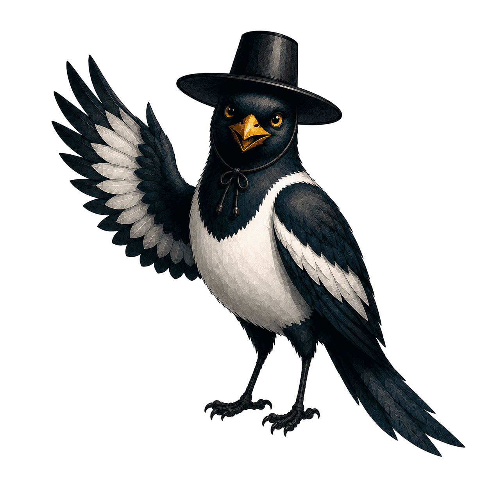

01A. 필수 동의
기존 consent를 남기되, 제품 소개·캐릭터·미리보기는 여기서 빼낸다.
9:41한글소리•••
Bevor du beginnst
Dein Lernen bleibt dein Raum.
Wir speichern nur, was deinen Lernweg fortsetzt. Gruppen sind immer freiwillig.
Datenschutz & Lernkonto
Hangul Sori · product UX direction · 2026-08-10
초보자의 다음 행동을 하나로 줄이고, 검증된 말하기 성취가 한옥의 구조가 되며, 계는 경쟁이 아닌 서로의 주간 학습 약속을 밝히는 방식의 전체 UX 목업입니다.
각 휴대폰은 바뀌는 한 화면의 기본 상태입니다. 목업 안의 독일어는 실제 앱의 대상 사용자에게 보일 카피의 방향이고, 한국어 제목·설명은 설계 검토용입니다. 실제 구현에서는 모든 보이는 문구를 DE/EN ARB 키로 분리합니다. 초록 버튼은 오직 하나의 다음 학습 행동, 밑줄 텍스트는 우선순위가 낮은 선택입니다.
자동 재생 소개와 선행 캐릭터 선택으로 학습을 미루지 않는다. 법적 동의와 목적 선택 뒤 첫 소리를 바로 경험하고, 동행은 성공 뒤 선택한다.
기존 consent를 남기되, 제품 소개·캐릭터·미리보기는 여기서 빼낸다.
Bevor du beginnst
Wir speichern nur, was deinen Lernweg fortsetzt. Gruppen sind immer freiwillig.
한 화면에서 “왜”와 “어디서부터”를 선택한다. 진단은 강제가 아니다.
Dein erster Weg
Das bestimmt zuerst die Situationen – nicht deine Fähigkeit.
Startpunkt
첫 올바른 반응 뒤에만 동행 캐릭터를 제안한다. 건너뛰어도 경로는 완전하다.
안녕하세요 · eine Begrüßung, die du jetzt hören und erwidern kannst.
태고와 조이를 기존 에셋으로 한 화면에서 비교한다. 선택은 저장되지만 학습을 잠그지 않으며, 나중에 선택하기와 프로필 변경 경로를 항상 남긴다.
Deine Lernbegleitung
Wähle Taego oder Joy. Beide helfen dir, und du kannst dich auch später entscheiden.


홈은 대시보드가 아니라 “오늘 내가 말할 수 있게 되는 것”을 보여준다. CTA는 사량방을 경유하지 않고 원래 학습 화면으로 바로 간다.
현재 TodayLearningSnapshot의 단 하나의 우선순위를 그대로, 더 명료하게 보여준다.
Heute · Dienstag
In etwa 4 Minuten kannst du weniger scharf bestellen.
Deine nächste Szene
Hören · wählen · selbst sprechen
현재 Course Mission의 긴 대시보드를 “도착점·순서·준비됨”만 남긴 짧은 출발면으로 바꾼다.
A1 · Essen bestellen
Du brauchst das, wenn dein Essen zu scharf sein könnte.
공통 미션 프레임은 기존 단어·문법·시나리오 화면의 위쪽 맥락만 제공한다. 문제 엔진을 다시 만들지 않는다.
Höre zuerst
Tippe erst, wenn du die Bitte erkannt hast.
한 번 더 듣기 가능 · 정답 전에는 다음 단계 없음
성공을 점수 폭죽이 아닌 실제 할 수 있는 행동과 다음 구조 변화로 연결한다.
A1 · Essen bestellen
초기 세로 무대와 후기 전체 지도는 모두 살린다. 단계의 “이름과 의미”를 실제 생활 능력으로 번역하고, 장식은 별도의 가벼운 보상으로 남긴다.
기존 12단계 한옥 이미지를 그대로 쓴다. 위에 단어팩 수치 대신 지금의 생활 능력 이야기를 얹는다.
Dein Hof · A1
Dein Fundament steht: begrüßen und dich vorstellen.
기존 personal_hanok_v2 지도와 장소 모델을 유지한다. 장소 카드는 목적을 먼저 말한다.
Dein begehbarer Hof
Ein Ort, eine Absicht. Lernen startet nicht über eine leere Karte.
홈의 동일 미션 CTA를 반복하지 않는다. 보상·배치·이전 성취를 보는 조용한 방으로 성격을 분리한다.
Dein Lernzimmer
Hier siehst du, was du dir tatsächlich erarbeitet hast.
기존 Practice Hub와 최근 추가된 Discover를 없애지 않는다. 일상 미션의 바깥에서 무엇을 하려는지 먼저 묻고, 전체 기능은 검색 가능하게 남긴다.
반복·약점·자유 연습의 진입점을 기능 이름이 아닌 필요로 묶는다.
Ohne Tagesmission
Wähle eine Absicht, nicht erst ein Spiel.
24개 이상의 기존 도구는 검색·범주로 보존하되, “학습 흐름의 다음 CTA”와 혼동시키지 않는다.
Werkzeuge & Kultur
Scannen, nachschlagen, hören oder eine kleine Pause machen.
진도 전체는 충분히 자세하지만, 오늘의 홈에서 사용자가 해석해야 할 일이 되지 않도록 별도 목적지로 둔다.
A1 · Alltag in Korea
Jeder Abschnitt endet mit einer Situation, die du selbst lösen kannst.
그룹은 학습을 보조하는 선택적 사회적 공간이다. 개인 점수·정답·정확한 문장은 공개하지 않고, 주간 약속에 기여한 사실만 따뜻하게 보인다.
16세 이상 자가 확인과 기존 안전 경로를 유지한다. 가입을 건너뛰면 홈으로 완전히 돌아갈 수 있다.
Freiwillige Lerngemeinschaft
Eine 계 ist eine kleine Gruppe, die eine Wochenabsicht miteinander hält.
“이번 주 총 팩 수”가 아니라 사람에게 읽히는 공동 목표를 선택한다. 백엔드는 검증된 기여만 합산한다.
Diese Woche gemeinsam
Jede Person hilft mit einer abgeschlossenen, passenden Lernhandlung.
기존 피드·스티커·응원·모더레이션을 유지하되, MVP와 XP 부스트를 첫 표면에서 제거한다.
Euer Hof
Ein gemeinsamer Ort für kleine, sichere Ermutigung.
프로필은 수집된 숫자보다 ‘내 경로를 내가 조절한다’는 곳이다. 빈 상태·오프라인·미완료도 다음 행동을 명확히 한다.
목표·시작점·동행·개인정보를 명시적으로 바꾸는 공간이다. 통계는 보조 정보로 내려간다.
A1 · Alltag in Korea · 3 sichere Situationen
오늘의 미션이 없거나 네트워크가 없어도 ‘무엇이 안전하게 가능한지’를 한 문장과 한 버튼으로 말한다.
Verbindung pausiert
Neue Gruppen- und Kontoaktionen brauchen kurz Internet. Deine gespeicherten Wiederholungen sind bereit.
추천기가 복습을 고르면, 새 콘텐츠를 숨긴 벌이 아니라 지금 할 수 있는 가장 짧은 약속으로 보인다.
Heute zuerst
12 Wörter aus deinen echten Szenen sind bereit, bevor etwas Neues dazukommt.
Deine nächste Handlung
ca. 3 Minuten · danach geht dein Weg weiter